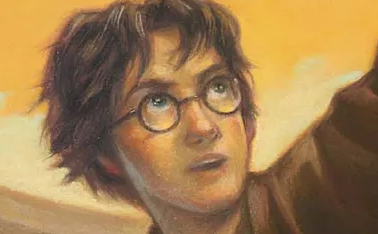

Harry Potter é uma série de sete romances de fantasia escrita pela autora britânica J. K. Rowling. A série narra as aventuras de um jovem chamado Harry James Potter, que descobre aos 11 anos de idade que é um bruxo ao ser convidado para estudar na Escola de Magia e Bruxaria de Hogwarts. O arco de história principal diz respeito às amizades de Harry com outros bruxos de sua idade, como Ronald Weasley e Hermione Granger, e também com o diretor de Hogwarts Albus Dumbledore, considerado o maior dos magos, e seus conflitos com o bruxo das trevas Lord Voldemort, que pretende se tornar imortal, conquistar o mundo dos bruxos, subjugar as pessoas não-mágicas e destruir todos aqueles que estão em seu caminho, especialmente Harry Potter, a quem ele considera seu maior rival.
Desde o lançamento do primeiro romance, Harry Potter e a Pedra Filosofal, em 26 de junho de 1997, os livros ganharam uma imensa popularidade, aclamação da crítica e foram um sucesso comercial em todo o mundo. A série também recebeu algumas críticas, incluindo a preocupação com o tom cada vez mais sombrio conforme a história progredia. Até maio de 2015, já haviam sido vendidas 450 milhões de cópias em todo o mundo, tornando a série a best-seller da história, sendo traduzida para 73 idiomas. Os últimos quatro livros consecutivamente foram considerados os mais vendidos da história, sendo que o último livro vendeu cerca de 11 milhões de cópias nos Estados Unidos nas primeiras 24 horas após o seu lançamento.
A série abrange vários gêneros, como fantasia, vida escolar e passagem entre a infância e a juventude (com elementos de mistério, suspense, aventura e romance), sendo que a história tem muitos significados e referências culturais. De acordo com Rowling, o tema principal é a morte. Há também muitas outras temáticas na série, como preconceito e corrupção.

Os livros foram originalmente impressos em inglês por duas grandes editoras, a Bloomsbury do Reino Unido e a Scholastic Press nos Estados Unidos. A série já foi publicada por muitas editoras em todo o mundo. A adaptação para uma série composta por oito filmes feita pela Warner Bros. Pictures se tornou a série cinematográfica mais assistida da história. Tamanho sucesso fez com que a marca Harry Potter chegasse ao valor de 15 bilhões de dólares. Além disso, o parque temático The Wizarding World of Harry Potter foi introduzido em diversas unidades da Universal Parks & Resorts.